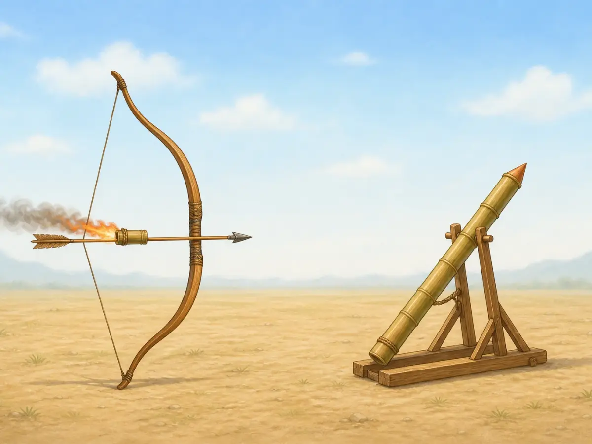

火药的发明：从炼丹炉到烟花
Gunpowder: From Alchemy to Fireworks
Page 1
炼丹炉发出的警告
A Warning from the Furnace
Alchemists heat and observe different materials beside a furnace; gunpowder emerged through a long period of experiment, not one single moment of invention.
大约在公元800年前后，也就是唐朝后期，一些中国炼丹家常常守在滚烫的炉子旁。他们把矿石和各种材料放在一起加热，一次又一次地试，希望炼出神奇的丹药。有些人想让身体更健康、寿命更长，还有人梦想着长生不老。
可是，炼丹炉里出来的东西，并不总是他们想要的。
一本古老的炼丹书里，就留下过一次危险的教训。有人把硫黄、硝石和其他材料放在一起加热，突然冒出了浓烟和火焰。不但烧伤了人的手和脸，连房子都烧了起来。
这当然不是什么长生不老的仙丹。可是，这团火实在很难让人忘记。
Around A.D. 800, during the later years of the Tang dynasty, Chinese alchemists worked beside hot furnaces, heating, mixing, and testing all kinds of materials. They hoped to make powerful medicines. Some searched for elixirs that might help people live longer. Some even dreamed of immortality.
But the furnace did not always give them what they wanted.
One old alchemy book tells of a dangerous experiment. When certain materials, including sulfur and saltpeter, were heated together, smoke and flames burst out. The people working nearby burned their hands and faces. Even the building caught fire.
This was definitely not a miracle medicine. But it was hard to ignore.
Page 2
“火药”
“Fire Medicine”
The name “fire medicine” preserves gunpowder's link to medicinal materials and alchemy. The powders and heating shown here must never be imitated.
试验没有停下来。人们继续改变材料，观察它们怎样燃烧，再把发现记下来。一次又一次，他们渐渐学会了怎样让这种混合物烧得更猛烈，也更稳定。
后来，它有了一个很特别的名字：huǒyào · 由含硝石、硫黄和炭的混合物发展而来的火药技术。。
“火”是火，“药”是药。这个名字听起来有点奇怪，却正好藏着它的来历。火药最早就是从炼丹和药物实验的世界里慢慢走出来的。
最开始，那团火还在炼丹炉旁。可是，它很快就要走得更远了。
The experiments continued. People tried different mixtures, watched how they burned, and passed along what they learned. Little by little, these fiery mixtures became more useful and more reliable.
They came to be called huǒyào · 火药 · The explosive mixture whose Chinese name literally means fire medicine..
Huǒ means fire. Yào can mean medicine. Fire medicine.
It is a strange name for gunpowder, but it carries a clue from its past. The discovery had grown out of the world of alchemy, where people had been working with medicines, minerals, and elixirs. The fire had begun beside a furnace. It would not stay there.
Page 3
火走出了炼丹房
Fire Leaves the Alchemy Room
又过了大约两百年，中国的一本官方兵书里已经记下了几种火药配方。人们开始把火药的火、热和烟用在别的地方。
有些箭上带着燃烧的火药，飞出去时又冒火又冒烟。后来，还出现了能够向前喷出火焰的兵器。经过一代又一代工匠的改进，火药武器也变得越来越厉害。
原本出现在瓶瓶罐罐和炼丹炉旁的东西，就这样走进了军队。可是，火药还有另一段旅程。这一次，火要飞起来了。
A couple of centuries later, an official Chinese military book recorded several gunpowder formulas. By then, people had begun finding new uses for its flame, heat, and smoke.
Some arrows carried burning gunpowder. Later weapons could send flames rushing forward. Over many generations, craftspeople kept changing and improving these ideas, eventually creating much more powerful gunpowder weapons.
Something that had begun among jars and furnaces was now in the hands of soldiers and military craftspeople. But gunpowder had another journey ahead of it. It was about to learn how to fly.
Page 4
火飞起来了
Fire Takes Off

An ancient rocket rests on a wooden stand, with a cylindrical gunpowder device fixed near the front of a long guide pole.
最早的“火箭”，真的可以是一支带着火的箭。弓把箭射出去，箭上的火药带着火光和烟雾一起飞。
后来，中国又出现了靠火药推动的火箭。这时候，并不是每一支“火箭”都需要一张弓来送它上路了。想象一下第一次看见这样的东西：一个小小的东西突然冲了出去，后面拖着火光和长长的烟。
原来只会猛烈燃烧的火药，现在竟然还能飞。而且，会飞的火也不一定只能出现在战场上。
At first, a “fire arrow” really could be an arrow carrying fire. A bow still sent it through the air, while the burning mixture added flame and smoke.
Later, gunpowder-powered rockets appeared in China. Now a bow was no longer needed to send every fiery object forward. Imagine seeing one for the first time: a small object suddenly racing away with fire and smoke streaming behind it.
Gunpowder had started as something that burned fiercely. Now it could race through the air. And people soon found that flying fire did not have to belong only to war.
Page 5
夜空里的火花
Fire Flowers in the Sky
火药走进节日，并不是等到火箭出现以后才开始。早在真正的火箭出现以前，人们已经把火药装进竹筒或纸筒，做成会发出响声和火光的爆竹。
后来，人们学会利用燃烧产生的气体推动筒子前进。火箭出现以后，这种推进办法也让烟火飞得更高：它们冲上夜空，再散开成明亮的火花。
所以，爆竹比真正的火箭更早；会飞上天空的烟花则是在火箭推进技术发展以后逐渐出现的。火药的发展并不是只有一条路：它走进节日，也走进兵书，跟着箭飞出去，推动火箭向前，又把光送上夜空。
炼丹家始终没有找到让人长生不老的仙丹。可是，他们那些一次又一次的试验，却打开了一扇谁也没有想到的门。仙丹没有出现。那团火却从炼丹炉里走了出来，而且一直走到了今天。
Gunpowder entered celebrations before true rockets appeared. People packed it into bamboo or paper tubes to make early firecrackers that produced bangs, sparks, and flashes.
Later, people learned that gas from burning gunpowder could push a tube forward. Once rockets appeared, the same kind of propulsion also helped carry fireworks higher into the sky, where they scattered into bright sparks.
Firecrackers therefore came before true rockets. Aerial fireworks developed later as rocket propulsion improved. Gunpowder did not follow one single path: it entered celebrations and military books, traveled with arrows, propelled rockets, and carried light into the night sky.
The alchemists never found a medicine that could make people live forever. But their experiments opened the door to something nobody had been searching for. The elixir never appeared. The fire did—and it traveled far beyond the furnace.